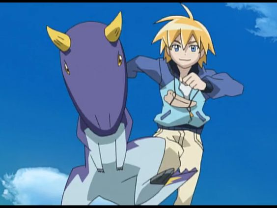
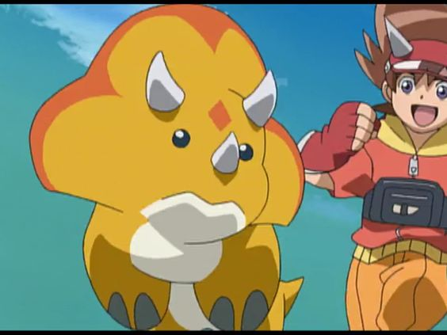
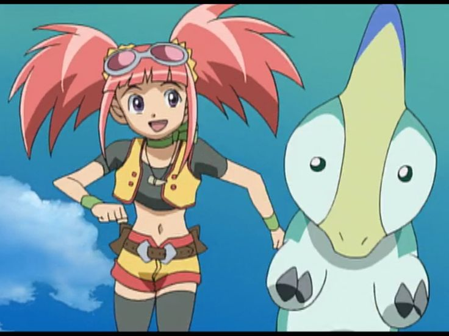
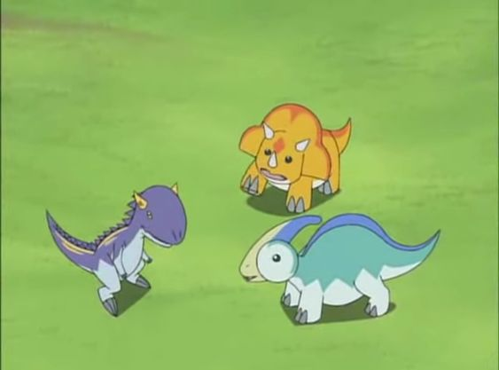

Ayudados por rocas cercanas a un caído meteorito, Max, Rex y Zoe combaten a la malvada pandilla Alpha mientras viajan por el planeta buscando dinosaurios vivos. Ve todo lo que quieras.
   El Equipo D, compuesto por Max Taylor, Zoe Drake y Rex Owen, viajará alrededor del mundo para vencer a la malvada Pandilla Alpha y descubrir los secretos para que los dinosaurios cobren vida nuevamente. Viviendo en el presente, los 3 héroes se transportan a cualquier rincón del mundo en busca de las tarjetas de dinosaurios que perdió el Dr.Z durante sus viajes en el tiempo.
De esta manera, dinosaurios verdaderos reaparecen en acción y se enfrentan en batallas espeluznantes y memorables.En la segunda temporada el Team D vuelve cuando los Piratas Espaciales ↵secuestran a los padres de Max, Rex y Zoe buscando unos objetos llamados piedras cósmicas, así el Equipo D junto a la Pandilla Alpha viajan por el tiempo buscando las piedras cósmicas y deben rescatar a sus padres de los malvados Piratas Espectrales, eso unido a que los dinosaurios utilizan unas armaduras espectrales para luchar, convierte la aventura en una aterradora y peligrosa misión para salvar al mundo.
Dr. Spike Taylor se encontraba en una misión paleontológica en África con su hijo Max y el amigo Rex.Max descubre algunas losas de piedra mágica y encuentra a los dinosaurios, que les piden ayuda. Una organización maligna llamada "Gang Alpha", dirigida por el infame Dr. Z, viajó hacia atrás en el tiempo para cazar dinosaurios y utilizarlos para tomar el mundo. Corresponde a Max, Zoe y Rex viajar por todo el mundo, derrotando al Dr. Z y a Gang Alpha , para salvar a los dinosaurios.